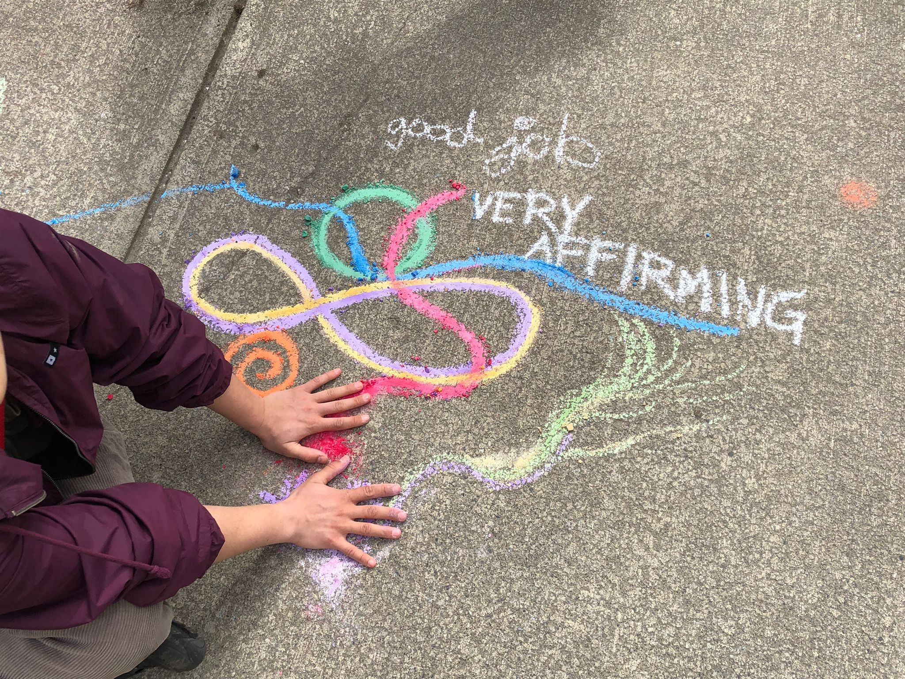
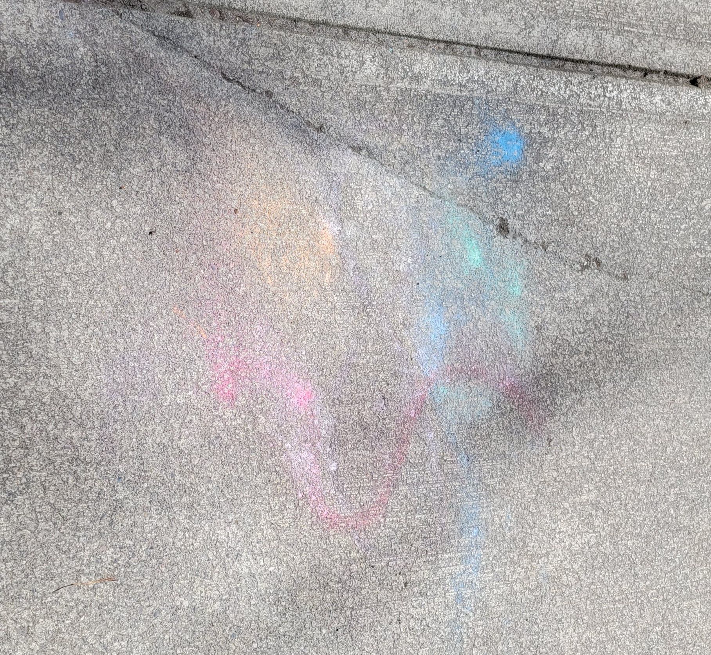

field_notes is a collage of ideas in no particular order. its linearity carries no inherent meaning - form here is simply the result of my limited coding ability. this page is in constant evolution (see commit history). here is where i pin up some ideas i have while walking and encounters that made me think.

back street between crab park and waterfront station, December 2021

One day my friend and I are walking along a familiar street and see, resting amongst the regular fairy pebbles and kitsch that decorate the bases of so many chestnut trees in this neighborhood, a box of chalk. It’s an open-ended invitation to which we respond by pausing to draw colorful forms on the sidewalk. “Very affirming” comments a passerby as they smile and skirt around us. In this moment, we have transformed an otherwise pedestrian space into a place of interest, using what mediums surround us to engage with the city and its passersby.
days later we walked the same sidewalk and saw the weathered impression dissolving back to abstraction. i wonder how many soles picked up pieces of chalk and how far our art walked with them.

Early April 2022
birdsongs caught on my alleyway walk between w 12th and 13th streets, May 2022
I begin writing for my thesis in a place I come to often - usually late in the morning with a smoke and a
couple hours uninterrupted thinking behind me. From where I stand now I see at once the
hazy outline of mountains above downtown's quiet skyscrapers, the subway construction at Broadway & Cambie
that exposes the guts of the city while slowing traffic and reconfiguring pedestrian flows, and, directly below
me, people walking rolling and riding about their day.
I like places that offer me perspective, like this spot, or the rooftop parkade of the supermarket two blocks
from
here or Granville Bridge. Places above the ground offer an alternate framing of what goes on in the city
- the
field in which I practice deep mapping. The sensorium is less overwhelming up here. Less abrasive. Bodily
distanced, I feel less. Vertically distanced, I see more. The places I have Been fall into some geospatial
context. (The surest method of developing spatial awareness, however, is getting lost on the ground.) From such
a vantage, the city and my thesis are more
easily theorized. I'll take out my notebook or my voice recorder and let the ideas flow. Later I'll write
these up and push them to
Friday September 30th 2022
450 days of being here

The city is hazy and so am I. I wake up late, spend till noon fighting the stupor of sleeping pills. Insomnia comes in waves; I pray it ebbs. I do five things at once without thinking: I wash the dishes while putting away glasses. I drop them all, I sweep them up and the faucet is still running. I try to eat. I choke. I'm unable to swallow like my body is rejecting input. I'm out of breath. My senses dulled. I'm lost in familiar places. I wander around listening to You want it darker on repeat. The mountains have disappeared and even downtown is fading away. I think I've opened myself so wide to the rhythms of this city that when it's hazy so am I.
Monday October 17th, 2022
467 days of being here

I take the 33 bus to campus as a treat - something different, outside routine. It takes me through places I've
been before
but have yet to connect via this navigation. The city is daily reinvented in my imagination. It emerges for me
not through
place making alone but through connections drawn by my movement between areas of familiarity. Lines between
points expand out
into planes of contingent perception which layer and stretch to pinch and intersect with one another.
I
write this first as it comes to me in the whitespace of A brief history of my body by Billy-Ray Belcourt.
I brought it with me because I woke up resonating with what he writes of care:
"Care doesn't
easily retrieve us
from the fragilities of cohabitation; it plunges us into a zone where everything shape-shifts, where
everything
is a potential site of severance and construction... Care is a disruptive thing because it frees the
analytic of
the world from a state that is overdetermined. And so, those of us who still want love in the couple form
dwell
in the instabilities of caring for that which also has the power to undo us. But always, with care, we
perform
high-stakes processes of world-making––in the hope that, in our dying days, we might feel freer" (Belcourt
2020,
123-124).
Each time I leave home I carefully select which books to bring with me, not because I will necessarily read
them, but more because I like their company. I bring along the people/stories/concepts I wish to think
with for the day. Often I bring more than one book. Today I have also Lefebvre's Rhythmanalysis (almost
always with me), A Manifesto for Research-Creation> by Natalie Loveless, and Invisible Cities> by
Italo Calvino. My all time favorites. I like to put texts into conversation first amongst themselves. In my bag
they rest against one another, interlap even with one a bookmark for the other.
Books read me as I read them. I open myself as I open them: read me. What else is there to say?
Later in the day I'm sitting outside with the same book, writing this. A stranger approaches me and asks me
about it. He says I'm the only person he's seen today using a physical book. We get to talking. He's in his
eighties, never travelled, says he talks instead to all sorts of people to build an understanding of the wider
world. He offers me advice: something about detours being an important part of the journey. Be open.
Taking the 33 instead of the 99 B-Line to campus was a detour from my habitual route. I'd never taken the 33 before but I think I will again.
Wednesday Oct 19 2022
469 days of being here